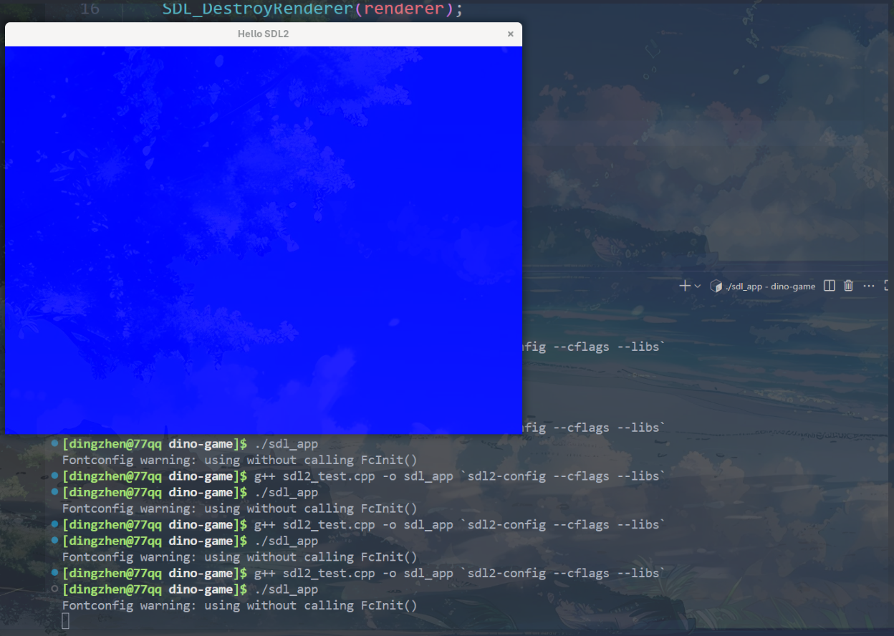
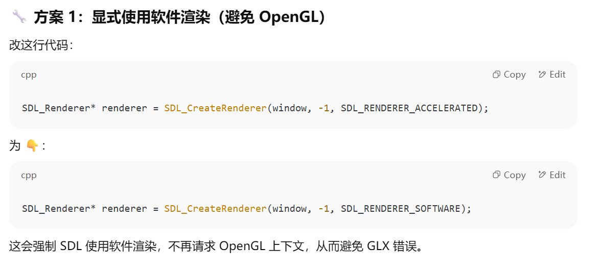
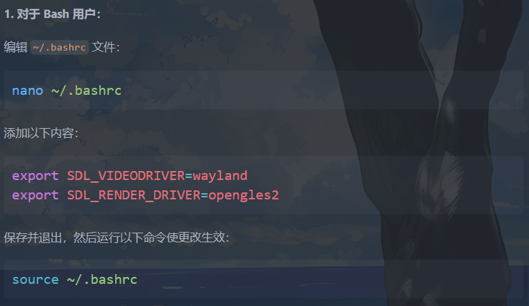

cpp game
用arch linux in wsl2开发一个cpp的游戏项目
key
图形库使用SDL2，指定使用Wayland + EGL + GLES
SDL2学习资源： https://lazyfoo.net/tutorials/SDL/
https://www.youtube.com/watch?v=c5UEFzOJ9-U&list=PLVotA8ycjnCs3DNWIbEIpBrjYkhJq11q-&index=2
https://www.cirmall.com/upload/webench/1475218799/works_SDL2%20%E5%88%9D%E7%BA%A7%E6%95%99%E7%A8%8B.pdf
编译命令：
get started
available options
在 Windows 上使用 WSL2 + Arch Linux 来开发一个 C++ 游戏项目时，要实现图形化界面支持，你可以结合以下技术来实现开发环境、图形显示和调试体验：
🎮 1. 图形界面支持方式
✅ 方案一：使用 Windows 上的图形服务（推荐）
使用 Windows 的 X Server + WSLg WSL2 从 Windows 11 开始自带 WSLg（Windows Subsystem for Linux GUI），它支持在 Linux 子系统中直接运行 GUI 程序（包括基于 X11 和 Wayland 的程序）。
- 适合人群：使用 Windows 11 的开发者（最推荐）
-
优点：
-
零配置 GUI 支持
- 可以运行 Linux 下的 GUI 工具（如 VS Code、SDL/OpenGL 窗口）
- 兼容性：WSLg 兼容 SDL2、OpenGL、Vulkan 等图形库
🛠 使用方法：
- 确保你的 WSL2 版本为 Windows 11 的 WSLg 支持版本
- 在 Arch 中安装游戏相关库：
✅ 方案二：使用 Windows 的 X Server（例如 VcXsrv、X410）
如果你使用 Windows 10 或禁用了 WSLg，可以使用 X Server：
export DISPLAY=$(cat /etc/resolv.conf | grep nameserver | awk '{print $2}'):0
export LIBGL_ALWAYS_INDIRECT=1
🔧 2. 游戏开发相关工具链建议
| 类型 | 工具/库 | 安装命令 |
|---|---|---|
| 编译器 | gcc / clang |
sudo pacman -S gcc clang |
| 构建系统 | cmake / meson |
sudo pacman -S cmake meson ninja |
| 图形库 | SDL2, OpenGL, Vulkan |
sudo pacman -S sdl2 glew glfw mesa vulkan-headers |
| 编辑器 | neovim / vscode / CLion |
VSCode可用Windows端，连接WSL调试 |
🕹 示例：编译一个简单的 SDL2 程序
- 安装 SDL2：
- 编写
main.cpp：
#include <SDL2/SDL.h>
int main() {
SDL_Init(SDL_INIT_VIDEO);
SDL_Window* window = SDL_CreateWindow("Hello SDL2", 100, 100, 800, 600, SDL_WINDOW_SHOWN);
SDL_Delay(3000);
SDL_DestroyWindow(window);
SDL_Quit();
return 0;
}
- 编译并运行：
如果你用的是 WSLg 或配置好了 X Server，窗口就能正常显示。
💡 如果你用 Vulkan 或 OpenGL：
- WSLg 支持 OpenGL + Vulkan 显示加速
- 可结合
vulkan-tools测试：
🚀 推荐开发流程（Windows + WSL2）：
- 用 VS Code 的 WSL Remote 插件 开发代码
- 在 Arch 下使用
cmake构建 - 用 SDL/OpenGL 编写游戏逻辑
- 用 WSLg 或 X Server 显示图形界面
- （可选）使用 git + GitHub/GitLab 做版本管理
- my option: 方案一：使用 Windows 上的图形服务
1. 在 Arch 中安装游戏相关库：
简单测试功能（after sudo pacman -S sdl2）：
编写：sdl2_test.cpp
#include <SDL2/SDL.h>
int main() {
SDL_Init(SDL_INIT_VIDEO);
SDL_Window* window = SDL_CreateWindow("Hello SDL2", 100, 100, 800, 600, SDL_WINDOW_SHOWN);
SDL_Delay(3000);
SDL_DestroyWindow(window);
SDL_Quit();
return 0;
}
-
标题栏显示为 "Hello SDL2"
-
窗口背景是默认的 黑色 或 白色（取决于系统或 SDL 版本）
-
程序暂停 3 秒钟，然后窗口关闭退出
如果你想让窗口里看到一些图像内容（比如颜色或图形），需要使用 SDL_Renderer 来清屏和绘制。
例如用蓝色填充窗口：
// 这段代码会显示一个纯蓝色窗口，持续 3 秒钟。
#include <SDL2/SDL.h>
int main() {
SDL_Init(SDL_INIT_VIDEO);
SDL_Window* window = SDL_CreateWindow("Hello SDL2", 100, 100, 800, 600, SDL_WINDOW_SHOWN);
SDL_Renderer* renderer = SDL_CreateRenderer(window, -1, SDL_RENDERER_ACCELERATED);
// 设置颜色为蓝色（R, G, B, A）
SDL_SetRenderDrawColor(renderer, 0, 0, 255, 255);
SDL_RenderClear(renderer); // 用当前颜色清空窗口
SDL_RenderPresent(renderer); // 显示内容
SDL_Delay(3000); // 显示 3 秒
SDL_DestroyRenderer(renderer);
SDL_DestroyWindow(window);
SDL_Quit();
return 0;
}

2. 设置 SDL 强制使用 Wayland + EGL 渲染
在初次运行以上绘制窗口（蓝色）的时候，尽管编译成功，但会在运行时候出现error：SDL 在尝试使用 OpenGL 上下文时失败了
X Error of failed request: BadValue (integer parameter out of range for operation)
Major opcode of failed request: 148 (GLX)
Minor opcode of failed request: 3 (X_GLXCreateContext)
Failure
这个错误通常意味着 SDL 在尝试使用 OpenGL 上下文时失败了，而原因大多数和 图形环境配置不兼容 或 驱动/库缺失 有关。
-
你在 WSL2 中运行 SDL2/OpenGL 相关程序
-
SDL 在创建 SDL_Renderer 时，内部会请求一个 OpenGL 上下文（可能是通过 GLX）
-
WSL 的图形系统（尤其是非 WSLg，比如使用 VcXsrv 或 X410）不能正确处理这个 OpenGL 请求
解决方案：
方案一(未采用):显式使用软件渲染

✅ 最小可运行版本（使用软件渲染）：如果你只是想确认 SDL 窗口能正常显示颜色，用这个代码即可：
#include <SDL2/SDL.h>
int main() {
SDL_Init(SDL_INIT_VIDEO);
SDL_Window* window = SDL_CreateWindow("Hello SDL2", 100, 100, 800, 600, SDL_WINDOW_SHOWN);
SDL_Renderer* renderer = SDL_CreateRenderer(window, -1, SDL_RENDERER_SOFTWARE);
SDL_SetRenderDrawColor(renderer, 0, 0, 255, 255); // 蓝色
SDL_RenderClear(renderer);
SDL_RenderPresent(renderer);
SDL_Delay(3000);
SDL_DestroyRenderer(renderer);
SDL_DestroyWindow(window);
SDL_Quit();
return 0;
}
方案二（采用）:设置 SDL 强制使用 Wayland + EGL 渲染
如果你使用的是 Windows 11 + WSLg，建议你检查环境变量是否存在：
遇到的问题：
显示正常 但是SDL 在尝试使用 OpenGL 上下文时失败了$WAYLAND_DISPLAY = wayland-0 说明你使用的是 WSLg，也就是 Windows 11 自带的图形支持环境，它理论上支持 OpenGL 和 Vulkan。但是你仍然遇到 SDL + OpenGL 的 GLX 错误，这提示我们：
SDL 可能误以为你在用 X11，从而尝试用 GLX（OpenGL on X11）创建上下文，而不是用 Wayland 或 EGL。
- ✅ 最关键的问题：SDL 自动选择的图形后端有问题
即便你在 WSLg 下，SDL2 默认可能仍然走 X11 + GLX 路径，而不是 Wayland + EGL。
快速验证方案：检查 SDL 的 video driver
在终端运行：
或者切换回 X11：
最直接的方法是：✔ 设置 SDL 强制使用 Wayland + EGL 渲染：
WSLg 支持 Wayland + EGL 更加稳定。你可以尝试运行前设置以下环境变量：
或者在程序中设置（必须在 SDL_Init 之前）：
这些设置会强制 SDL：
- 使用
Wayland而不是X11 - 使用
EGL/OpenGL ES 2而不是GLX/OpenGL
- 📦 安装必要依赖库（Wayland & EGL 支持）
确保你已经安装了支持 EGL 和 Wayland 的 Mesa 和 SDL 库：
✅ 总结你的修复步骤建议：
-
确保 WSLg 在运行（你已经成功）
-
设置 SDL 使用 Wayland + GLES：
- 确保安装了所有依赖库：
- 使用
SDL_RENDERER_SOFTWARE是兜底方案
Question
以上你给出的措施中 ： 显式使用软件渲染（避免 OpenGL） 解决了问题，这个做法和后面你提出的设置 SDL 强制使用 Wayland + EGL 渲染有什么关联？

Wayland + EGL和OpenGL是什么关系?


最终我们采用方案二：设置 SDL 强制使用 Wayland + EGL 渲染
走迷宫游戏（用于测试功能栈完整性）
以下是一个简单的实现，满足你的需求：一个 4x4 的方格游戏，玩家通过键盘上下左右键移动到随机生成的宝藏位置即可结束游戏。
#include <SDL2/SDL.h>
#include <cstdlib>
#include <ctime>
#include <iostream>
const int GRID_SIZE = 4; // 4x4 方格
const int CELL_SIZE = 100; // 每个方格的大小
const int WINDOW_SIZE = GRID_SIZE * CELL_SIZE;
struct Position {
int x, y;
};
void renderGrid(SDL_Renderer* renderer) {
SDL_SetRenderDrawColor(renderer, 200, 200, 200, 255); // 灰色
for (int i = 0; i <= GRID_SIZE; ++i) {
SDL_RenderDrawLine(renderer, i * CELL_SIZE, 0, i * CELL_SIZE, WINDOW_SIZE); // 竖线
SDL_RenderDrawLine(renderer, 0, i * CELL_SIZE, WINDOW_SIZE, i * CELL_SIZE); // 横线
}
}
void renderPlayer(SDL_Renderer* renderer, Position player) {
SDL_Rect rect = {player.x * CELL_SIZE, player.y * CELL_SIZE, CELL_SIZE, CELL_SIZE};
SDL_SetRenderDrawColor(renderer, 0, 255, 0, 255); // 绿色
SDL_RenderFillRect(renderer, &rect);
}
void renderTreasure(SDL_Renderer* renderer, Position treasure) {
SDL_Rect rect = {treasure.x * CELL_SIZE, treasure.y * CELL_SIZE, CELL_SIZE, CELL_SIZE};
SDL_SetRenderDrawColor(renderer, 255, 215, 0, 255); // 金色
SDL_RenderFillRect(renderer, &rect);
}
int main() {
SDL_Init(SDL_INIT_VIDEO);
SDL_Window* window = SDL_CreateWindow("Treasure Hunt Game", SDL_WINDOWPOS_CENTERED, SDL_WINDOWPOS_CENTERED, WINDOW_SIZE, WINDOW_SIZE, SDL_WINDOW_SHOWN);
SDL_Renderer* renderer = SDL_CreateRenderer(window, -1, SDL_RENDERER_ACCELERATED);
std::srand(std::time(nullptr));
Position player = {0, 0}; // 玩家初始位置
Position treasure = {std::rand() % GRID_SIZE, std::rand() % GRID_SIZE}; // 随机生成宝藏位置
bool running = true;
SDL_Event event;
while (running) {
while (SDL_PollEvent(&event)) {
if (event.type == SDL_QUIT) {
running = false;
} else if (event.type == SDL_KEYDOWN) {
switch (event.key.keysym.sym) {
case SDLK_UP:
if (player.y > 0) player.y--;
break;
case SDLK_DOWN:
if (player.y < GRID_SIZE - 1) player.y++;
break;
case SDLK_LEFT:
if (player.x > 0) player.x--;
break;
case SDLK_RIGHT:
if (player.x < GRID_SIZE - 1) player.x++;
break;
}
}
}
// 检查是否找到宝藏
if (player.x == treasure.x && player.y == treasure.y) {
std::cout << "You found the treasure! Game over!" << std::endl;
running = false;
}
// 渲染
SDL_SetRenderDrawColor(renderer, 0, 0, 0, 255); // 黑色背景
SDL_RenderClear(renderer);
renderGrid(renderer);
renderTreasure(renderer, treasure);
renderPlayer(renderer, player);
SDL_RenderPresent(renderer);
}
SDL_DestroyRenderer(renderer);
SDL_DestroyWindow(window);
SDL_Quit();
return 0;
}
[dingzhen@77qq dino-game]$ ./treasure_game
X Error of failed request: BadValue (integer parameter out of range for operation)
Major opcode of failed request: 148 (GLX)
Minor opcode of failed request: 3 (X_GLXCreateContext)
Value in failed request: 0x0
Serial number of failed request: 347
Current serial number in output stream: 348
-
运行程序前设置 SDL 使用 Wayland 和 EGL：
-
(经测试这一步没有必要 都能跑)修改代码以使用 GLES SDL2 会自动选择 EGL 和 GLES2 渲染器，但你可以显式指定 GLES 渲染器。修改SDL_CreateRenderer 的标志：
SDL 会自动选择 GLES 渲染器，无需额外配置。 -
编译运行
为了永久性配置，加到你的 shell 配置文件中

游戏效果：